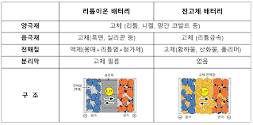
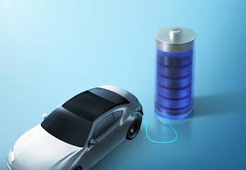

전고체 이차전지
영상보기전고체 이차전지
전고체 이차전지가 전기 자동차 때문에 사회적으로 관심이 많고 앞으로의 전지는 전고체 이차전지를 주로 사용하게 될 가능성이 많아 전고체 이차전지와 기존의 액체 전해질을 사용하는 이차전지의 차이점을 알고싶고 전고체 이차전지의 원리와 구조, 또 환경에 대해 어떤 장점이 있는지 알아보고 싶고 미래에는 정말 전고체 전지를 주로 사용하게 될지 궁금해 이 주제로 정보기술 탐구 보고서를 쓰게 되었다.
영상보기
선정이유
- 전고체 이차전지가 전기 자동차 때문에 사회적으로 관심이 많고 앞으로의 전지는 전고체 이차전지를 주로 사용하게 될 가능성이 많아 전고체 이차전지를 알아보고 싶어 고르게 됨
| 개발 배경 및 목적 | |
|---|---|
|  | 전고체 이차전지는 고체 상태의 전해질을 사용하여 에너지를 저장하는 배터리이다. 이러한 전지는 리튬 이차 전지의 발전을 이어받아 더 안전하고 고효율적인 충전 및 방전을 제공하는 것을 목적으로 개발 되었다. |
| 특징 전고체 이차전지는 고체 전해질을 사용하여 안전성과 안정성을 향상시킨 전지로, 높은 에너지 밀도와 사이클 안정성을 갖추고 있다. 또한 온도 민감성이 낮고 초고속 충전이 가능하며, 충전 상태를 오랫동안 유지하는 높은 용량 유지율을 가지고 있다. |
 |
이차전지 비교
| 고체 | 액체 | |
|---|---|---|
| 안전성 | 좋음 | 안좋음 |
| 에너지 효율 | 좋음 | 안좋음 |
| 용량 | 좋음 | 안좋음 |